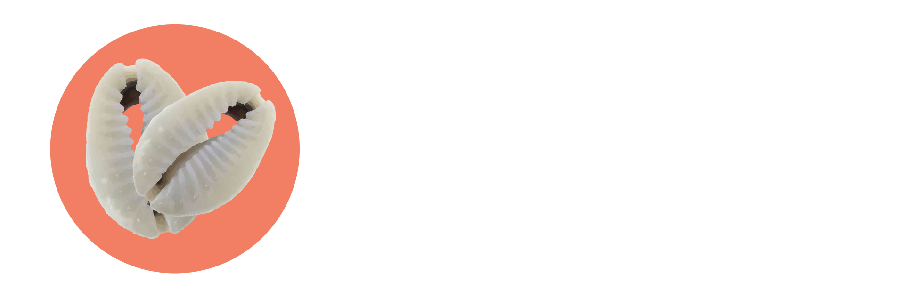

<nav class="navbar  navbar-expand-lg navbar-light sticky-top" style="background-color: #3c5aa6;">
  <div class="container-fluid">
    <a class="navbar-brand" href="../../home/home.component.html" routerLink="/home" routerLinkActive="active">
      
    </a>
    <button class="navbar-toggler" type="button" data-bs-toggle="collapse" data-bs-target="#navbarSupportedContent"
      aria-controls="navbarSupportedContent" aria-expanded="false" aria-label="Toggle navigation">
      <span class="navbar-toggler-icon"></span>
    </button>
    <div class="collapse navbar-collapse " id="navbarSupportedContent">
      <ul class="navbar-nav me-auto mb-2 mb-lg-0 nav-fill">
        <li class="nav-item">
          <a class="nav-link active" aria-current="page" href="#" routerLink="/home" routerLinkActive="active">Accueil</a>
        </li>
        <li class="nav-item">
          <a class="nav-link" href="" routerLink="/reseau" routerLinkActive="active">Reseau</a>
        </li>
        <li class="nav-item">
          <a class="nav-link" href="#" routerLink="/publication" routerLinkActive="active">Publications</a>
        </li>
      </ul>
      <div class="btn-group" id="navbarDropdown">
        <button type="button" class="btn btn-secondary dropdown-toggle" data-bs-toggle="dropdown" aria-expanded="false">
          <i class="fas fa-user-circle "></i>
        </button>
        <ul class="dropdown-menu dropdown-menu-end">
          <li><button class="dropdown-item" type="button" routerLink="/home" routerLinkActive="active">Profil</button></li>
          <li><button class="dropdown-item" type="button">Modifier Mot De Passe</button></li>
          <li><hr class="dropdown-divider"></li>
          <li><button class="dropdown-item" type="button">Deconnexion</button></li>
        </ul>
      </div>
    </div>
  </div>
</nav>
